Explorer et comparer différents LLM#
Cliquez sur l'image ci-dessus pour visionner la vidéo de cette leçon
Dans la leçon précédente, nous avons vu comment l'IA générative transforme le paysage technologique, comment fonctionnent les modèles de langage étendus (LLM) et comment une entreprise - comme notre startup - peut les appliquer à ses cas d'utilisation et se développer ! Dans ce chapitre, nous allons comparer et contraster différents types de modèles de langage étendus (LLM) pour comprendre leurs avantages et inconvénients.
La prochaine étape dans le parcours de notre startup est d'explorer le paysage actuel des LLM et de comprendre lesquels sont adaptés à notre cas d'utilisation.
Introduction#
Cette leçon couvrira :
- Les différents types de LLM dans le paysage actuel.
- Tester, itérer et comparer différents modèles pour votre cas d'utilisation dans Azure.
- Comment déployer un LLM.
Objectifs d'apprentissage#
Après avoir terminé cette leçon, vous serez capable de :
- Choisir le bon modèle pour votre cas d'utilisation.
- Comprendre comment tester, itérer et améliorer les performances de votre modèle.
- Savoir comment les entreprises déploient des modèles.
Comprendre les différents types de LLM#
Les LLM peuvent être classés de différentes manières en fonction de leur architecture, de leurs données d'entraînement et de leur cas d'utilisation. Comprendre ces différences aidera notre startup à choisir le bon modèle pour le scénario et à comprendre comment tester, itérer et améliorer les performances.
Il existe de nombreux types de modèles LLM, et votre choix dépend de ce que vous souhaitez en faire, de vos données, de votre budget et d'autres facteurs.
Selon que vous souhaitez utiliser les modèles pour la génération de texte, d'audio, de vidéo, d'images, etc., vous pourriez opter pour un type de modèle différent.
-
Reconnaissance audio et vocale. Pour cet usage, les modèles de type Whisper sont un excellent choix car ils sont polyvalents et conçus pour la reconnaissance vocale. Ils sont entraînés sur des données audio variées et peuvent effectuer une reconnaissance vocale multilingue. En savoir plus sur les modèles de type Whisper ici.
-
Génération d'images. Pour la génération d'images, DALL-E et Midjourney sont deux choix très connus. DALL-E est proposé par Azure OpenAI. En savoir plus sur DALL-E ici et également dans le chapitre 9 de ce programme.
-
Génération de texte. La plupart des modèles sont entraînés pour la génération de texte et vous avez un large choix allant de GPT-3.5 à GPT-4. Ils ont des coûts différents, GPT-4 étant le plus cher. Il est intéressant de consulter le Azure OpenAI playground pour évaluer quels modèles conviennent le mieux à vos besoins en termes de capacités et de coût.
-
Multimodalité. Si vous cherchez à gérer plusieurs types de données en entrée et en sortie, vous pourriez envisager des modèles comme gpt-4 turbo avec vision ou gpt-4o - les dernières versions des modèles OpenAI - qui sont capables de combiner le traitement du langage naturel avec la compréhension visuelle, permettant des interactions via des interfaces multimodales.
Choisir un modèle signifie obtenir certaines capacités de base, qui peuvent cependant ne pas être suffisantes. Souvent, vous disposez de données spécifiques à votre entreprise que vous devez transmettre au LLM d'une manière ou d'une autre. Il existe plusieurs approches pour cela, que nous aborderons dans les sections suivantes.
Modèles de base versus LLM#
Le terme "modèle de base" a été inventé par des chercheurs de Stanford et défini comme un modèle d'IA répondant à certains critères, tels que :
- Ils sont entraînés en utilisant l'apprentissage non supervisé ou l'apprentissage auto-supervisé, ce qui signifie qu'ils sont entraînés sur des données multimodales non étiquetées et qu'ils ne nécessitent pas d'annotation ou de labellisation humaine des données pour leur processus d'entraînement.
- Ce sont des modèles très volumineux, basés sur des réseaux neuronaux très profonds entraînés sur des milliards de paramètres.
- Ils sont généralement destinés à servir de "fondation" pour d'autres modèles, ce qui signifie qu'ils peuvent être utilisés comme point de départ pour construire d'autres modèles par le biais de l'affinage.
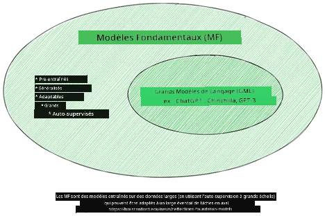
Source de l'image : Essential Guide to Foundation Models and Large Language Models | par Babar M Bhatti | Medium
Pour clarifier davantage cette distinction, prenons ChatGPT comme exemple. Pour construire la première version de ChatGPT, un modèle appelé GPT-3.5 a servi de modèle de base. Cela signifie qu'OpenAI a utilisé des données spécifiques aux conversations pour créer une version ajustée de GPT-3.5, spécialisée dans les scénarios conversationnels, tels que les chatbots.
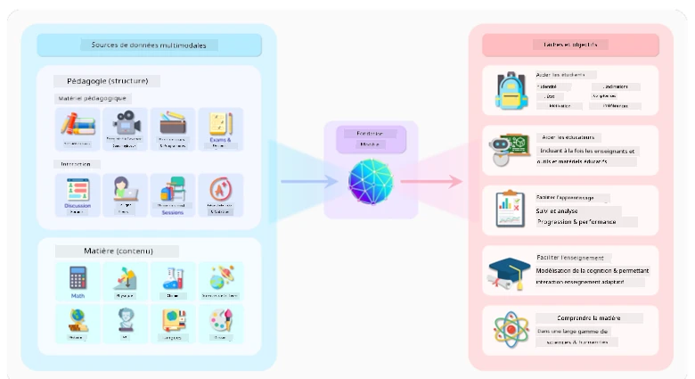
Source de l'image : 2108.07258.pdf (arxiv.org)
Modèles open source versus propriétaires#
Une autre façon de catégoriser les LLM est de savoir s'ils sont open source ou propriétaires.
Les modèles open source sont des modèles mis à disposition du public et peuvent être utilisés par tout le monde. Ils sont souvent proposés par l'entreprise qui les a créés ou par la communauté de recherche. Ces modèles peuvent être inspectés, modifiés et personnalisés pour divers cas d'utilisation des LLM. Cependant, ils ne sont pas toujours optimisés pour une utilisation en production et peuvent ne pas être aussi performants que les modèles propriétaires. De plus, le financement des modèles open source peut être limité, et ils peuvent ne pas être maintenus à long terme ou mis à jour avec les dernières recherches. Des exemples de modèles open source populaires incluent Alpaca, Bloom et LLaMA.
Les modèles propriétaires sont des modèles détenus par une entreprise et ne sont pas mis à disposition du public. Ces modèles sont souvent optimisés pour une utilisation en production. Cependant, ils ne peuvent pas être inspectés, modifiés ou personnalisés pour différents cas d'utilisation. De plus, ils ne sont pas toujours disponibles gratuitement et peuvent nécessiter un abonnement ou un paiement pour être utilisés. Les utilisateurs n'ont pas non plus de contrôle sur les données utilisées pour entraîner le modèle, ce qui signifie qu'ils doivent faire confiance au propriétaire du modèle pour garantir l'engagement envers la confidentialité des données et l'utilisation responsable de l'IA. Des exemples de modèles propriétaires populaires incluent OpenAI models, Google Bard ou Claude 2.
Embedding versus génération d'images versus génération de texte et de code#
Les LLM peuvent également être catégorisés en fonction du type de sortie qu'ils génèrent.
Les embeddings sont un ensemble de modèles capables de convertir du texte en une forme numérique, appelée embedding, qui est une représentation numérique du texte d'entrée. Les embeddings facilitent la compréhension des relations entre les mots ou les phrases par les machines et peuvent être utilisés comme entrées par d'autres modèles, tels que les modèles de classification ou de regroupement qui ont de meilleures performances sur les données numériques. Les modèles d'embedding sont souvent utilisés pour l'apprentissage par transfert, où un modèle est construit pour une tâche de substitution pour laquelle il existe une abondance de données, puis les poids du modèle (embeddings) sont réutilisés pour d'autres tâches en aval. Un exemple de cette catégorie est OpenAI embeddings.
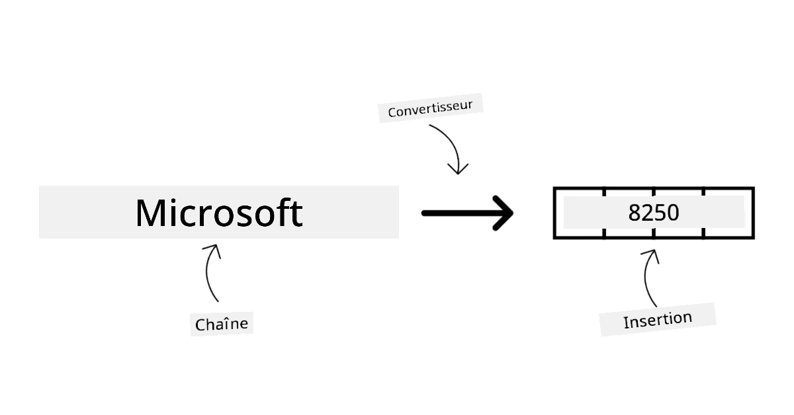
Les modèles de génération d'images sont des modèles qui génèrent des images. Ces modèles sont souvent utilisés pour l'édition d'images, la synthèse d'images et la traduction d'images. Les modèles de génération d'images sont souvent entraînés sur de grands ensembles de données d'images, tels que LAION-5B, et peuvent être utilisés pour générer de nouvelles images ou pour éditer des images existantes avec des techniques de retouche, de super-résolution et de colorisation. Des exemples incluent DALL-E-3 et Stable Diffusion models.
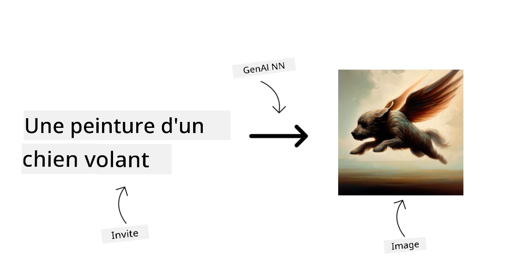
Les modèles de génération de texte et de code sont des modèles qui génèrent du texte ou du code. Ces modèles sont souvent utilisés pour la synthèse de texte, la traduction et la réponse aux questions. Les modèles de génération de texte sont souvent entraînés sur de grands ensembles de données de texte, tels que BookCorpus, et peuvent être utilisés pour générer du nouveau texte ou pour répondre à des questions. Les modèles de génération de code, comme CodeParrot, sont souvent entraînés sur de grands ensembles de données de code, tels que GitHub, et peuvent être utilisés pour générer du nouveau code ou pour corriger des bugs dans du code existant.
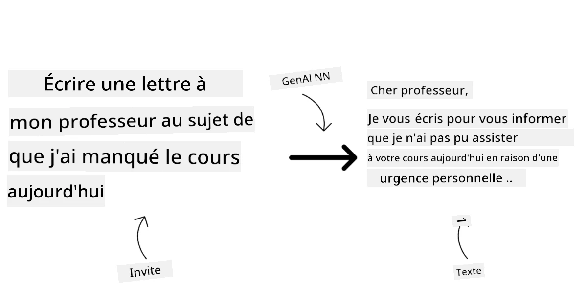
Encodeur-Décodeur versus Décodeur uniquement#
Pour parler des différents types d'architectures des LLM, utilisons une analogie.
Imaginez que votre responsable vous confie la tâche de rédiger un quiz pour les étudiants. Vous avez deux collègues : l'un s'occupe de créer le contenu et l'autre de le réviser.
Le créateur de contenu est comme un modèle Décodeur uniquement, il peut regarder le sujet et voir ce que vous avez déjà écrit, puis rédiger un cours en fonction de cela. Il est très doué pour rédiger un contenu engageant et informatif, mais il n'est pas très bon pour comprendre le sujet et les objectifs d'apprentissage. Quelques exemples de modèles Décodeur uniquement sont les modèles de la famille GPT, comme GPT-3.
Le réviseur est comme un modèle Encodeur uniquement, il examine le cours écrit et les réponses, remarque les relations entre eux et comprend le contexte, mais il n'est pas bon pour générer du contenu. Un exemple de modèle Encodeur uniquement serait BERT.
Imaginez que nous puissions également avoir quelqu'un capable de créer et de réviser le quiz, ce serait un modèle Encodeur-Décodeur. Quelques exemples seraient BART et T5.
Service versus Modèle#
Parlons maintenant de la différence entre un service et un modèle. Un service est un produit proposé par un fournisseur de services cloud, et est souvent une combinaison de modèles, de données et d'autres composants. Un modèle est le composant central d'un service, et est souvent un modèle de base, tel qu'un LLM.
Les services sont souvent optimisés pour une utilisation en production et sont souvent plus faciles à utiliser que les modèles, via une interface utilisateur graphique. Cependant, les services ne sont pas toujours disponibles gratuitement et peuvent nécessiter un abonnement ou un paiement pour être utilisés, en échange de l'utilisation des équipements et des ressources du propriétaire du service, optimisant ainsi les dépenses et facilitant la mise à l'échelle. Un exemple de service est Azure OpenAI Service, qui propose un plan tarifaire à la consommation, ce qui signifie que les utilisateurs sont facturés proportionnellement à leur utilisation du service. De plus, Azure OpenAI Service offre une sécurité de niveau entreprise et un cadre d'IA responsable en plus des capacités des modèles.
Les modèles ne sont que le réseau neuronal, avec les paramètres, les poids, et autres. Permettre aux entreprises de les exécuter localement nécessiterait cependant d'acheter des équipements, de construire une structure pour évoluer et d'acheter une licence ou d'utiliser un modèle open source. Un modèle comme LLaMA est disponible pour être utilisé, nécessitant une puissance de calcul pour exécuter le modèle.
Comment tester et itérer avec différents modèles pour comprendre les performances sur Azure#
Une fois que notre équipe a exploré le paysage actuel des LLM et identifié quelques bons candidats pour leurs scénarios, l'étape suivante consiste à les tester sur leurs données et sur leur charge de travail. C'est un processus itératif, réalisé par des expériences et des mesures. La plupart des modèles mentionnés dans les paragraphes précédents (modèles OpenAI, modèles open source comme Llama2 et transformers de Hugging Face) sont disponibles dans le Catalogue de Modèles dans Azure AI Studio.
Azure AI Studio est une plateforme cloud conçue pour les développeurs afin de créer des applications d'IA générative et de gérer tout le cycle de développement - de l'expérimentation à l'évaluation - en combinant tous les services Azure AI dans un hub unique avec une interface utilisateur pratique. Le Catalogue de Modèles dans Azure AI Studio permet à l'utilisateur de :
- Trouver le modèle de base d'intérêt dans le catalogue - qu'il soit propriétaire ou open source, en filtrant par tâche, licence ou nom. Pour améliorer la recherche, les modèles sont organisés en collections, comme la collection Azure OpenAI, la collection Hugging Face, et plus encore.
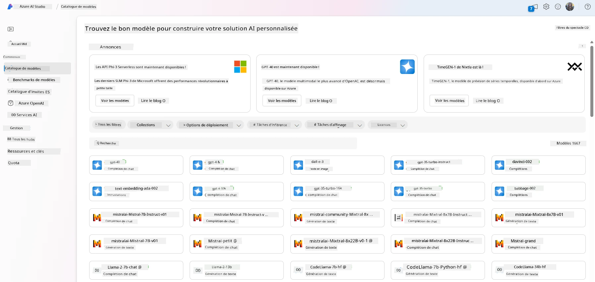
- Examiner la fiche du modèle, incluant une description détaillée de l'utilisation prévue et des données d'entraînement, des exemples de code et des résultats d'évaluation dans la bibliothèque d'évaluations internes.
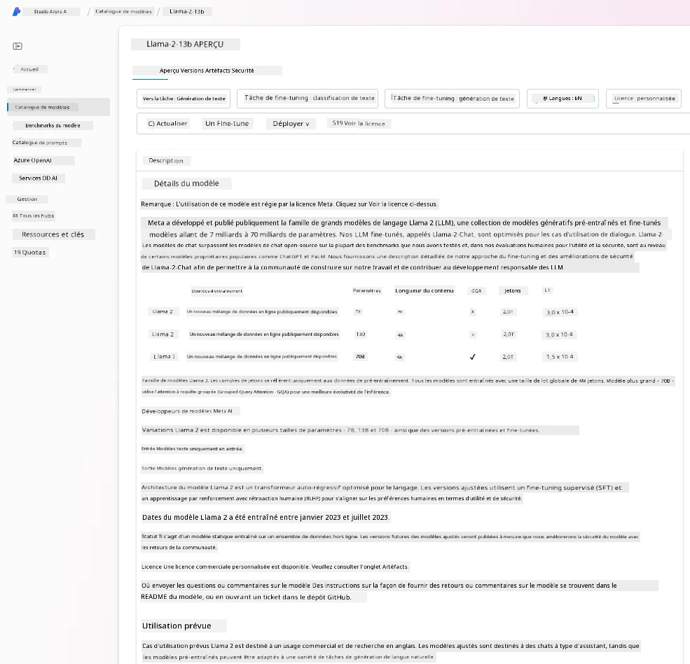
- Comparer les benchmarks entre les modèles et les ensembles de données disponibles dans l'industrie pour évaluer lequel répond le mieux au scénario commercial, via le volet Benchmarks de Modèles.
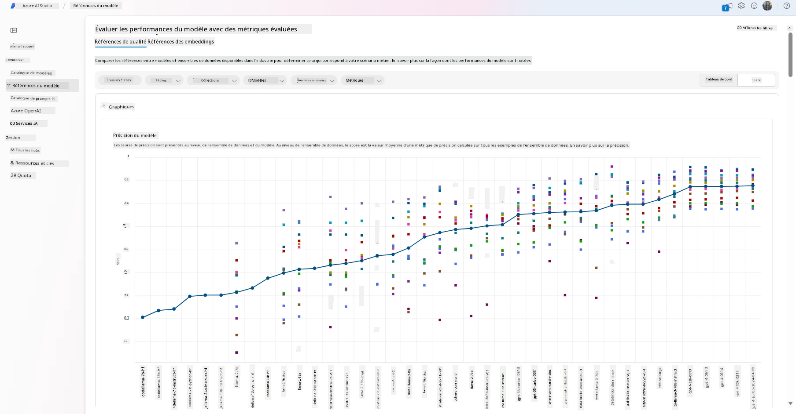
- Affiner le modèle avec des données d'entraînement personnalisées pour améliorer les performances du modèle dans une charge de travail spécifique, en utilisant les capacités d'expérimentation et de suivi d'Azure AI Studio.
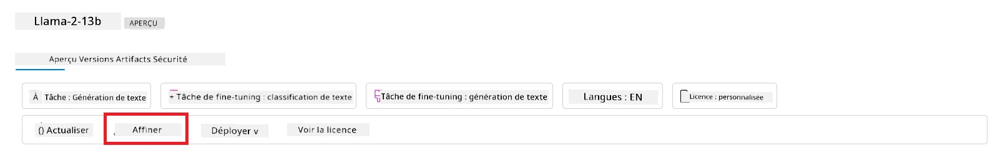
- Déployer le modèle pré-entraîné original ou la version affinée pour une inférence en temps réel à distance - calcul géré - ou un point de terminaison API sans serveur - paiement à l'utilisation - pour permettre aux applications de l'utiliser.
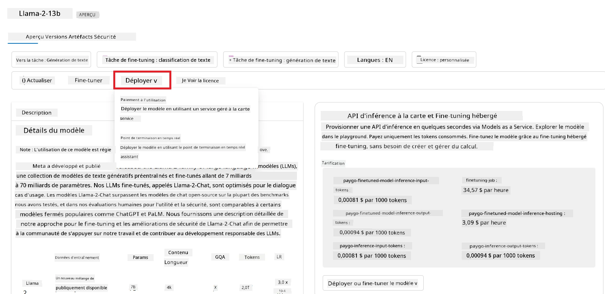
[!NOTE] Tous les modèles du catalogue ne sont pas actuellement disponibles pour l'affinage et/ou le déploiement en paiement à l'utilisation. Consultez la fiche du modèle pour les détails sur les capacités et les limitations du modèle.
Améliorer les résultats des LLM#
Nous avons exploré avec notre équipe de startup différents types de LLM et une plateforme cloud (Azure Machine Learning) nous permettant de comparer différents modèles, de les évaluer sur des données de test, d'améliorer leurs performances et de les déployer sur des points de terminaison d'inférence.
Mais quand faut-il envisager d'affiner un modèle plutôt que d'utiliser un modèle pré-entraîné ? Existe-t-il d'autres approches pour améliorer les performances du modèle sur des charges de travail spécifiques ?
Il existe plusieurs approches qu'une entreprise peut utiliser pour obtenir les résultats souhaités d'un LLM. Vous pouvez choisir différents types de modèles avec différents degrés d'entraînement lors du déploiement d'un LLM en production, avec divers niveaux de complexité, de coût et de qualité. Voici quelques approches différentes :
-
Ingénierie des prompts avec contexte. L'idée est de fournir suffisamment de contexte lors de la requête pour garantir d'obtenir les réponses souhaitées.
-
Génération augmentée par récupération, RAG. Vos données peuvent exister dans une base de données ou un point de terminaison web, par exemple. Pour garantir que ces données, ou un sous-ensemble de celles-ci, soient incluses au moment de la requête, vous pouvez récupérer les données pertinentes et les inclure dans le prompt de l'utilisateur.
-
Modèle affiné. Ici, vous avez entraîné davantage le modèle sur vos propres données, ce qui le rend plus précis et adapté à vos besoins, mais cela peut être coûteux.
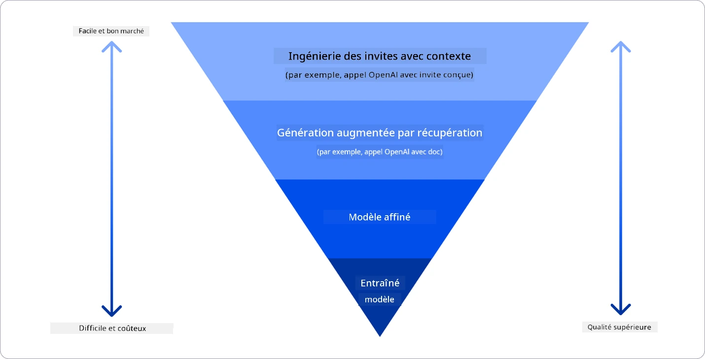
Source de l'image : Four Ways that Enterprises Deploy LLMs | Fiddler AI Blog
Ingénierie des prompts avec contexte#
Les LLM pré-entraînés fonctionnent très bien sur des tâches générales de traitement du langage naturel, même lorsqu'ils sont appelés avec un prompt court, comme une phrase à compléter ou une question – ce qu'on appelle l'apprentissage "zero-shot".
Cependant, plus l'utilisateur peut formuler sa requête avec une demande détaillée et des exemples – le contexte – plus la réponse sera précise et proche des attentes de l'utilisateur. Dans ce cas, on parle d'apprentissage "one-shot" si le prompt inclut un seul exemple et d'"apprentissage par quelques exemples" si plusieurs exemples sont inclus. L'ingénierie des prompts avec contexte est l'approche la plus économique pour commencer.
Génération augmentée par récupération (RAG)#
Les LLM ont la limitation de ne pouvoir utiliser que les données qui ont été utilisées lors de leur entraînement pour générer une réponse. Cela signifie qu'ils ne savent rien des faits survenus après leur processus d'entraînement et qu'ils ne peuvent pas accéder à des informations non publiques (comme les données d'entreprise).
Cela peut être surmonté grâce à la RAG, une technique qui augmente le prompt avec des données externes sous forme de fragments de documents, en tenant compte des limites de longueur du prompt. Cela est soutenu par des outils de base de données vectorielle (comme Azure Vector Search) qui récupèrent les fragments utiles à partir de diverses sources de données prédéfinies et les ajoutent au contexte du prompt.
Cette technique est très utile lorsqu'une entreprise n'a pas assez de données, de temps ou de ressources pour affiner un LLM, mais souhaite tout de même améliorer les performances sur une charge de travail spécifique et réduire les risques de fabrications, c'est-à-dire de mystification de la réalité ou de contenu nuisible.
Modèle affiné#
L'affinage est un processus qui utilise l'apprentissage par transfert pour "adapter" le modèle à une tâche spécifique ou pour résoudre un problème particulier. Contrairement à l'apprentissage par quelques exemples et à la RAG, il en résulte un nouveau modèle généré, avec des poids et des biais mis à jour. Cela nécessite un ensemble d'exemples d'entraînement composé d'une seule entrée (le prompt) et de sa sortie associée (la complétion).
Cette approche serait préférée si :
-
Utilisation de modèles affinés. Une entreprise souhaite utiliser des modèles affinés moins performants (comme les modèles d'embedding) plutôt que des modèles hautes performances, ce qui permet une solution plus économique et rapide.
-
Prise en compte de la latence. La latence est importante pour un cas d'utilisation spécifique, donc il n'est pas possible d'utiliser des prompts très longs ou un grand nombre d'exemples que le modèle devrait apprendre, car cela ne correspond pas aux limites de longueur du prompt.
-
Rester à jour. Une entreprise dispose de nombreuses données de haute qualité et d'étiquettes de vérité terrain, ainsi que des ressources nécessaires pour maintenir ces données à jour au fil du temps.
Modèle entraîné#
Entraîner un LLM à partir de zéro est sans aucun doute l'approche la plus difficile et la plus complexe à adopter, nécessitant des quantités massives de données, des ressources qualifiées et une puissance de calcul appropriée. Cette option ne devrait être envisagée que dans un scénario où une entreprise a un cas d'utilisation spécifique à un domaine et une grande quantité de données centrées sur ce domaine.
Vérification des connaissances#
Quelle pourrait être une bonne approche pour améliorer les résultats de complétion des LLM ?
- Ingénierie des prompts avec contexte
- RAG
- Modèle affiné
R : 3, si vous avez le temps, les ressources et des données de haute qualité, l'affinage est la meilleure option pour rester à jour. Cependant, si vous cherchez à améliorer les choses et que vous manquez de temps, il vaut la peine de considérer d'abord la RAG.
🚀 Défi#
Renseignez-vous davantage sur la manière dont vous pouvez utiliser la RAG pour votre entreprise.
Excellent travail, continuez votre apprentissage#
Après avoir terminé cette leçon, consultez notre collection d'apprentissage sur l'IA générative pour continuer à approfondir vos connaissances sur l'IA générative !
Passez à la leçon 3 où nous examinerons comment utiliser l'IA générative de manière responsable !